👁️ 感知机器人时期
看得见 · 摸得着
视觉识别
触觉感应
环境感知
智能交互基础
视觉识别
触觉感应
环境感知
智能交互基础
感知机器人=传统机器人+传感器+感知算法。它通过视觉、触觉、力觉、听觉、
距离等传感器，
像人一样 “看见”、“摸到”、“感知”周围环境并根据环境变化自主调整动作不再是死板地重复预设程序。
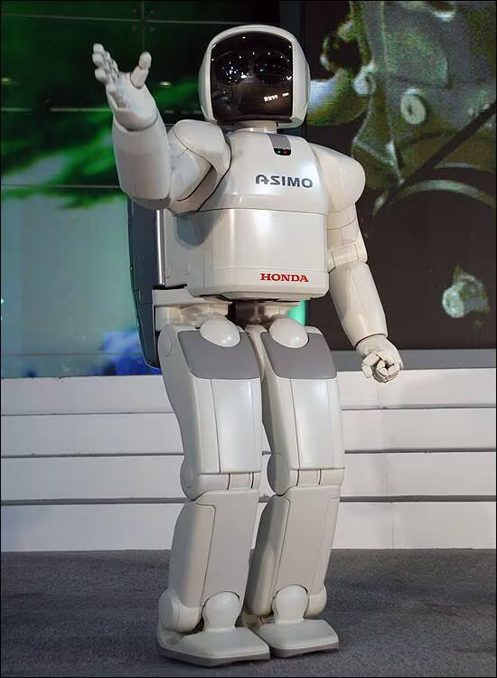
搭载高清摄像头与图像算法，可识别物体、颜色、形状、人脸，广泛用于分拣、检测、安防领域。
图像采集、预处理（处理图像）、特征提取、模型推理、输出结果
图像分类、目标检测、图像分割
✅ 应用：产品分拣、外观检测、人脸识别、目标追踪。（点击放大查看）
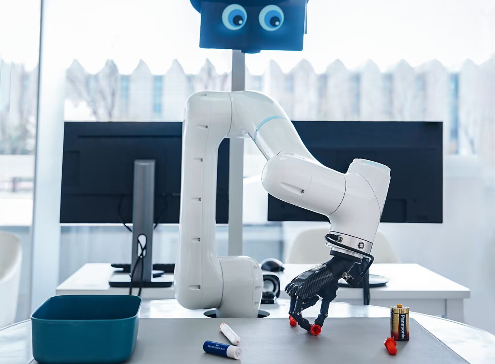
工业视觉机械臂
通过力矩传感器/六维力传感器实时检测：力的大小+方向+扭矩，再实时调整电机输出，实现柔顺运动。
机器人装配、打磨、抛光、去毛刺，康复机器人柔性牵引肢体，不会拉伤患者，人机协作（人手轻推机器人就会顺势跟随，精密贴合、误差自适应补偿）
✅ 应用：跌倒防护、人机交互、辅助行走（点击放大查看）
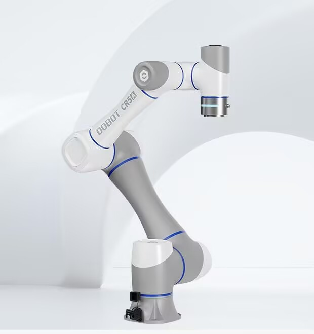
艾利特力控协作机械臂
通过触觉传感器采集压力、应力、接触位置、摩擦力、材质软硬等信息。
识别物体软硬、光滑、粗糙，判断抓取是否打滑、是否接触到位，温柔抓取易碎、柔软物品（水果、玻璃、人体肢体），实现人机安全触碰，避免撞伤
✅ 应用：柔性抓取、精密装配、人机协作（点击放大查看）
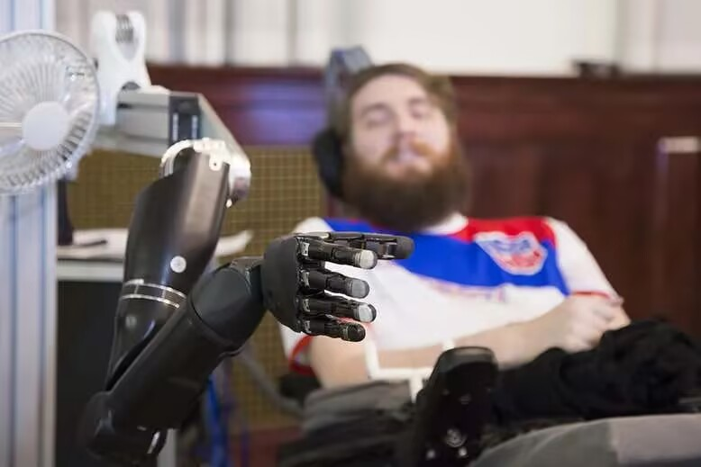
柔性触觉康复机械手
点击图片放大查看
通过雷达实时构建环境地图，自主避障、路径规划，实现无轨导航，是服务机器人的核心技术。
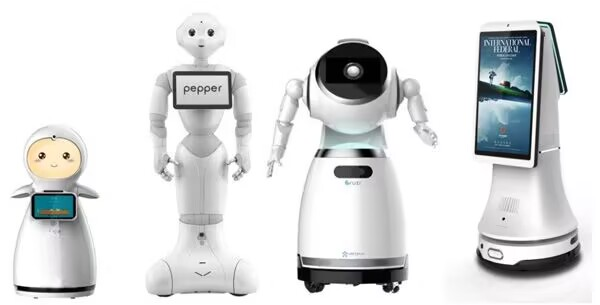
室内服务机器人
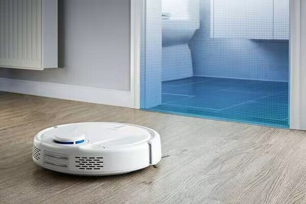
激光雷达扫地机器人
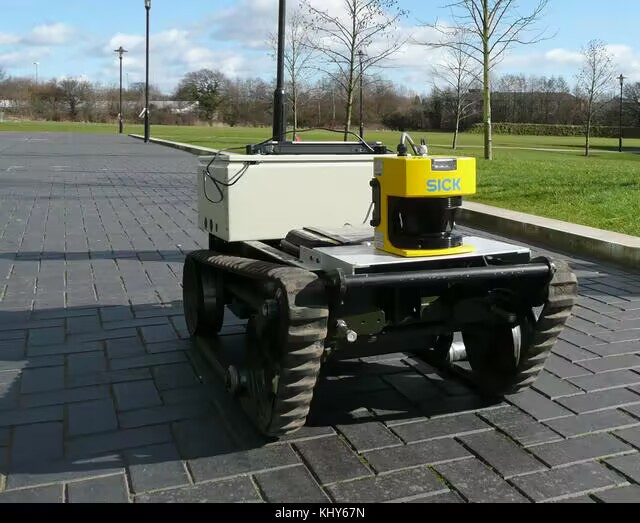
户外/巡检履带式机器人
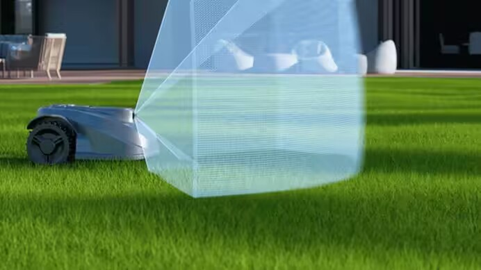
农业/割草激光雷达机器人
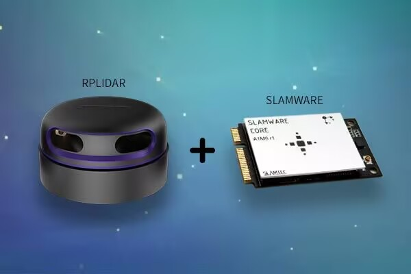
原理示意图
集成温湿度、气体、烟雾等传感器，可进入危险区域巡检，广泛应用于电力、化工、矿山行业。
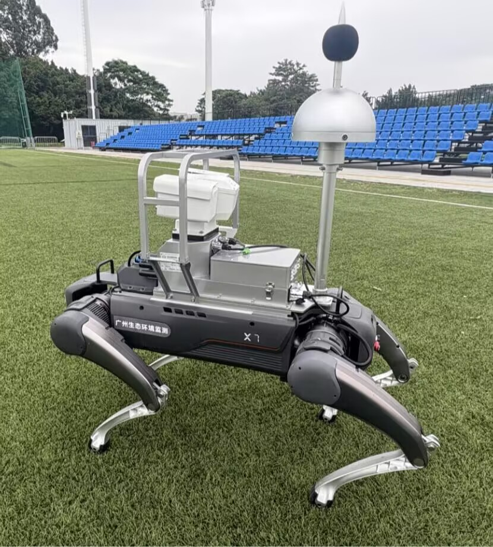
四足环境监测机器狗
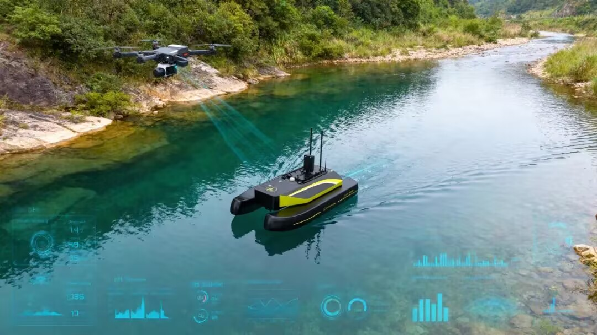
水质检测无人船
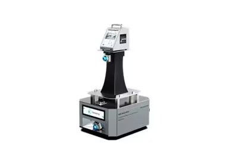
粒子/浮游菌检测机器人
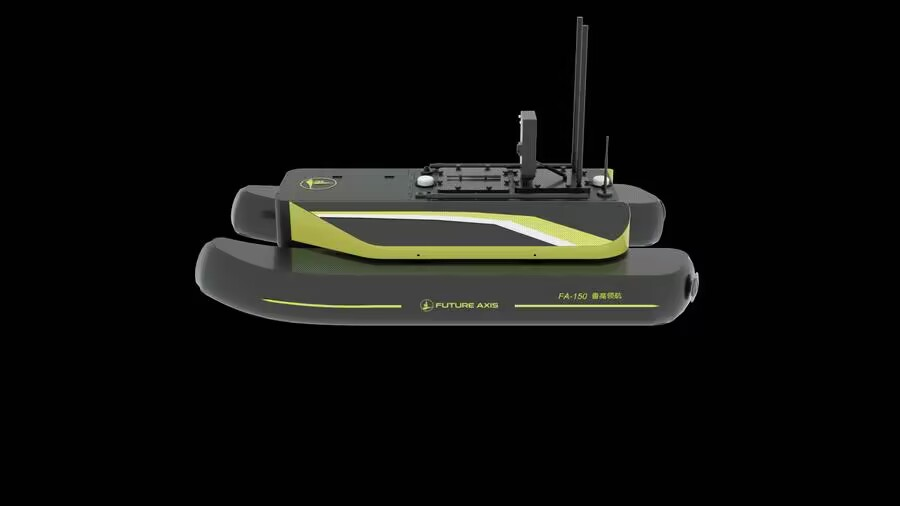
水质监测站智能运维机器人
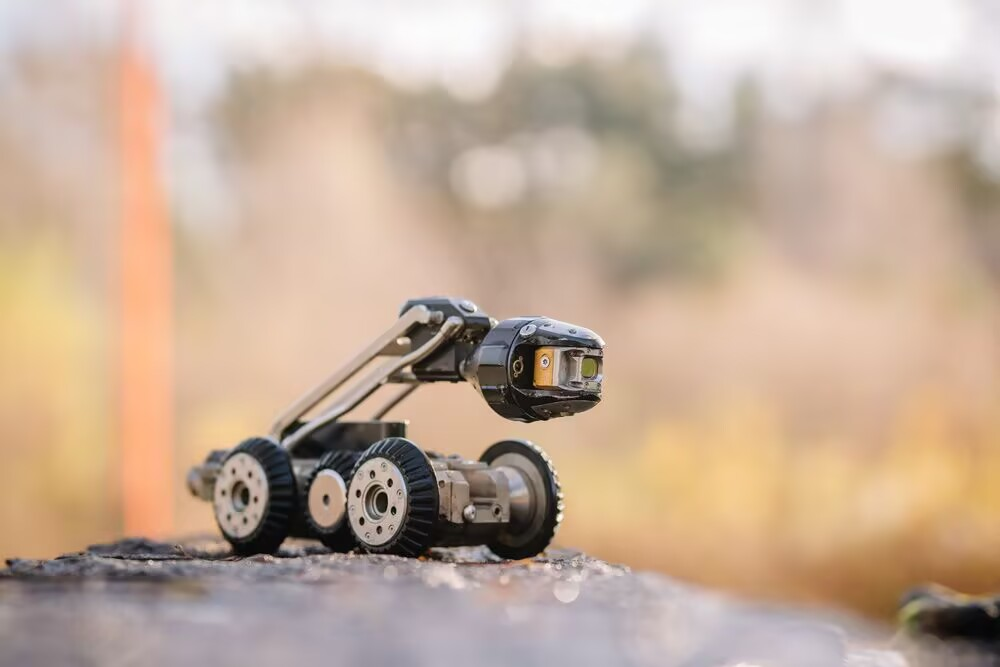
户外/应急轮式监测机器人
点击图片放大查看
工业视觉初步应用
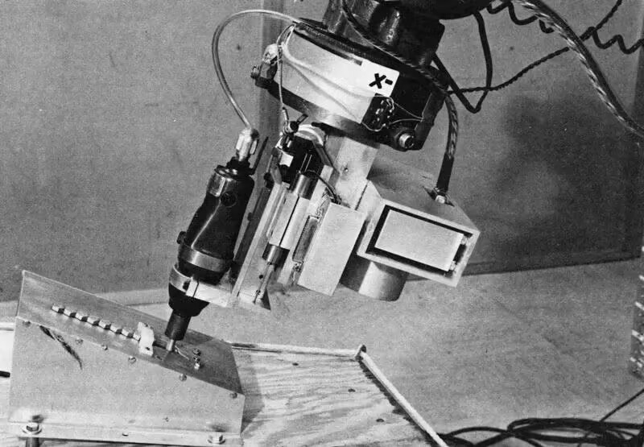
传感器小型化普及
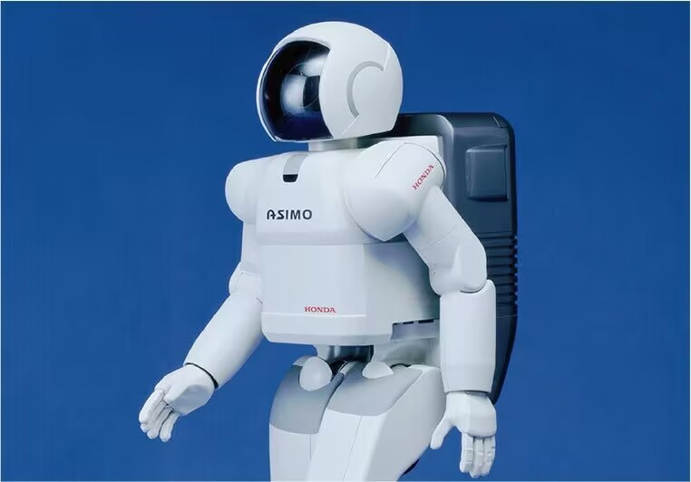
机器视觉与深度学习爆发
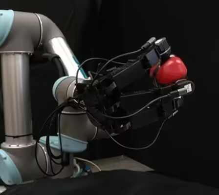
多传感器融合智能感知
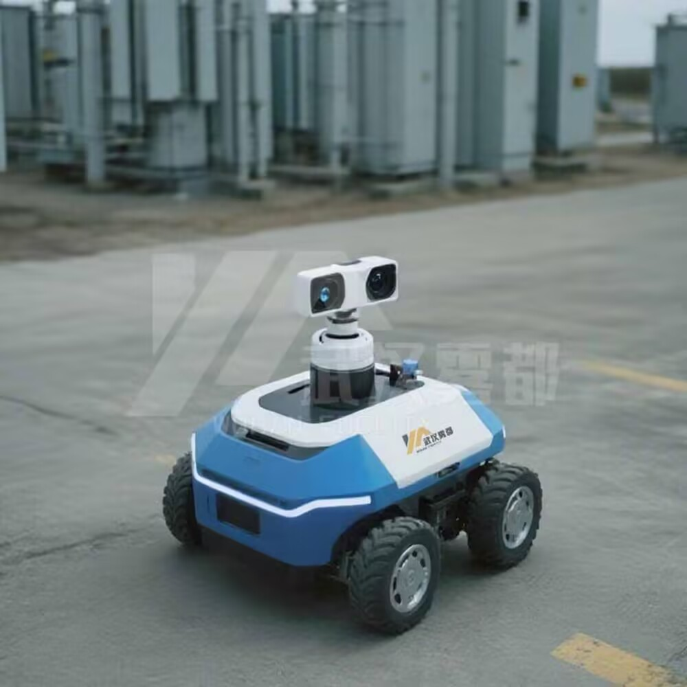